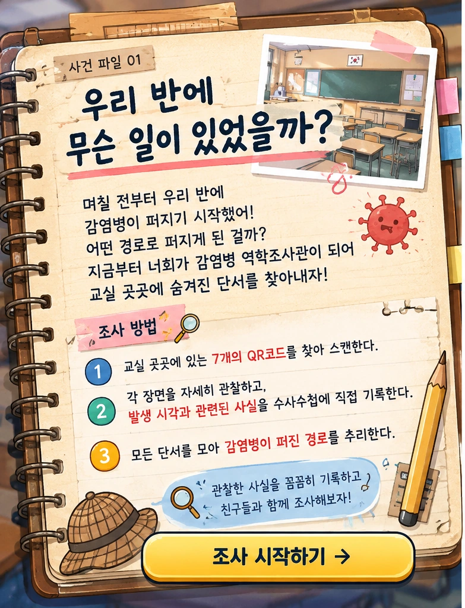

현장 수사 진행 중
교실에 남겨진
7개의 단서
교실 곳곳의 QR코드를 찾아 스캔하세요.
관찰한 사실과 시각을 종이 수사수첩에 기록하세요.
각 장면에서 정답은 알려주지 않습니다.
📍 교실에서 QR코드를 찾을 곳 · 총 7곳
📚 책장🚪 교실문📌 게시판👩🏫 선생님🧴 손소독제🪑 책상📱 핸드폰
조사 기록 준비 중

교실 곳곳의 QR코드를 찾아 스캔하세요.
관찰한 사실과 시각을 종이 수사수첩에 기록하세요.
각 장면에서 정답은 알려주지 않습니다.
QR코드를 카메라 중앙에 맞춰 주세요. 조사한 장소는 아래에 ✓ 표시돼요.
게시한 실제 웹앱 주소를 넣어 QR 7개를 인쇄하세요. 아래의 단서 순서는 교사용이며 학생 메인 화면에는 표시되지 않습니다. 교사용 화면은 PIN으로 보호되지 않으므로 학생에게 주소의 ?teacher=1을 공유하지 마세요.
QR 스캔이 열리지 않는 경우 HTTPS 게시 여부와 카메라 권한을 확인하세요. 카메라 인식은 브라우저 지원 또는 외부 라이브러리 연결에 따라 달라집니다.